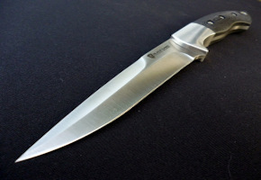
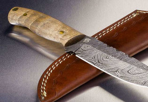

As facas M16c2 são feitas de aço Carbono 1050, esta categoria de faca
é uma ferramenta fundamental, que pode substituir a maioria das outras facas - exceto, talvez,
uma faca de pão. Uma faca grande, com uma lamina de 150 mm de comprimento com 4 mm de espessura, e
para encerrar esta armonia de qualidade usamos madeira de leis do tipo São Carlos de reflorestamento.
A M16c2 tem um peso de 200 gramas com otimo balanceamento, deixando muito fácil de usar em muitas
atividades como: retalhamento de legumes, corte de carne, limpeza de frutas e diversos pratos
Gourmet

Faca INX70.
INX70
As facas INX70 são feitas de aço inoxidavel 70, uma ferramenta ideal para um
churrasco com os amigos, sua lamina 220 mm de comprimento com 4 mm de espessura, com cabo de polimero e
aluminium 2024T, facilitando qualquer serviço durarante a preparação dos pratos, seja ele com corte de carnes
tipicas com picanha, como carne de caça. A INX70 tem um peso de 300 gramas com otimo balanceamento,
deixando muito fácil de usar em muitas atividades como: retalhamento de ervas finas, corte de carne, limpeza de
peixe e diversos pratos
Camping

Faca SR71.
SR71
As facas SR71 são feitas de aço damasco, este tipo de aço é a união de dois ou mais aços de
características diferentes, unidos pelo método de caldeamento. Uma SR71 é uma otima ferramenta
de camping, sua lamina 120 mm de comprimento com 3 mm de espessura, com cabo de maideira de leis
Alemã, sua enpunhadura facilitando qualquer serviço durarante uma trilha, com corte de carnes caça
diversos pratos